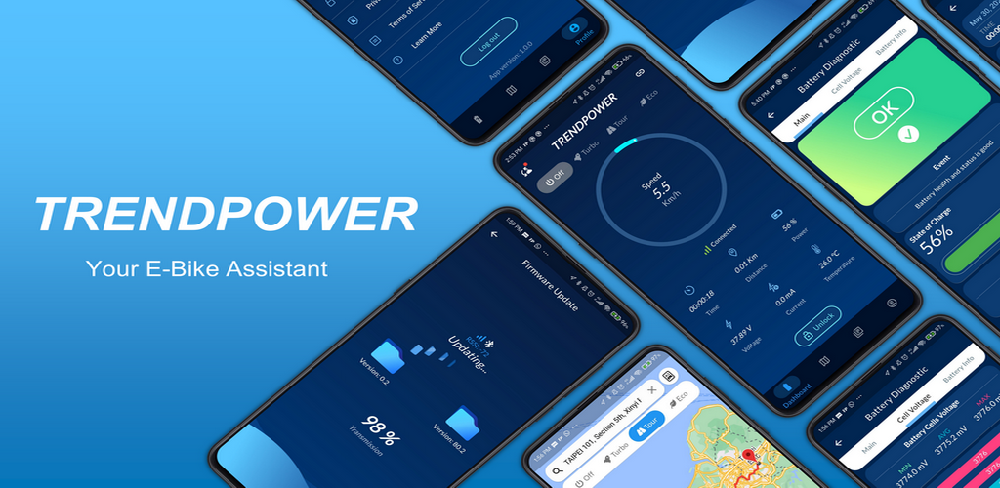

Overview
Connecting your smartphone and your E-Bike with Trend Power APP, enhance your riding experience and real-time monitoring of your E-Bike system This application provides a complete feature to make your E-Bike safe for long-term use.
Connecting your smartphone and your E-Bike with Trend Power APP, enhance your riding experience and real-time monitoring of your E-Bike system This application provides a complete feature to make your E-Bike safe for long-term use.
Display key attributes of your E-Bike information such as speed, ride time, battery capacity, distance, battery voltage, current, and temperature. Include in-app notification about your riding alert, battery alert, and connection status. Control your E-Bike power mode and electric lock with ease switch. With Trend Power APP All of your E-Bike control is yours.
Build-in map navigation to enhance your ride experience with Trend Power APP. Find your destination and it will provide a smart trajectory to visualize the estimated distance of the remaining battery capacity with each power mode (Turbo, Tour, Eco). Record your rides and share the story on your social media.

Trend Power is highly concerned about your E-Bike safety, with real-time monitoring of your E-Bike battery safety status to ensure your ride experience safer and more comfortable.
We keep updating our product to make sure everything is under control and optimize for long-term use. With Over The Air (OTA) Battery Firmware Update, the user can easily update the E-Bike battery anywhere and anytime.